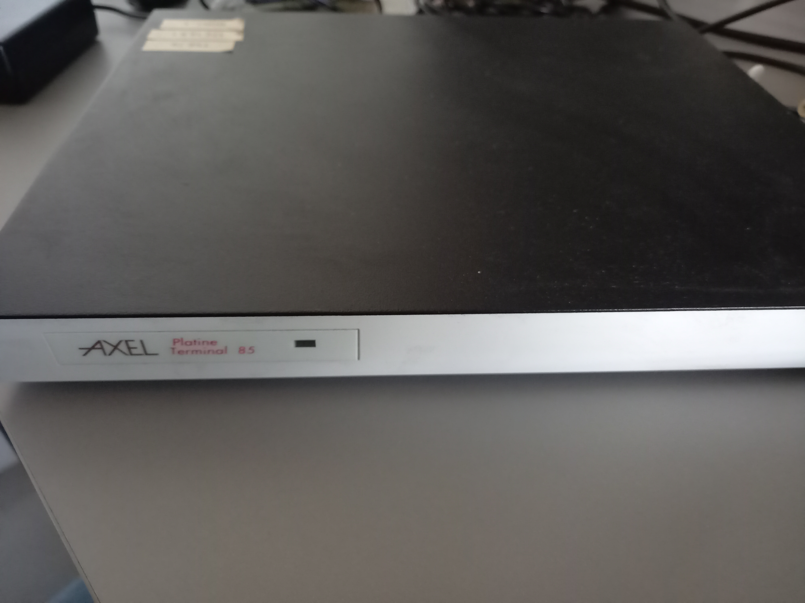
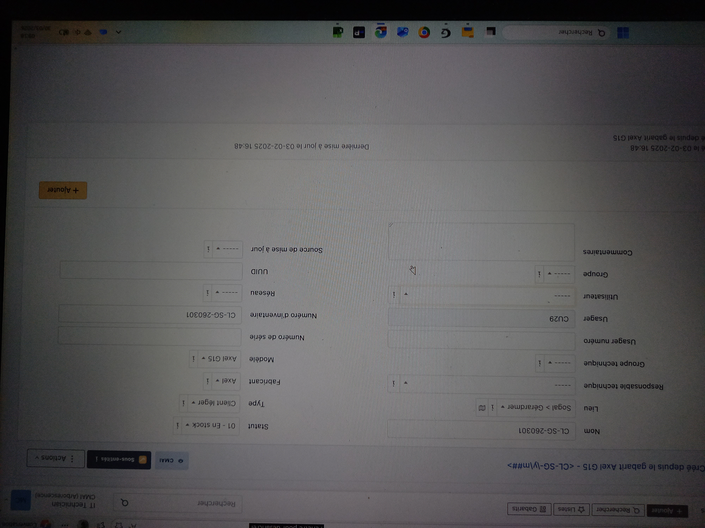
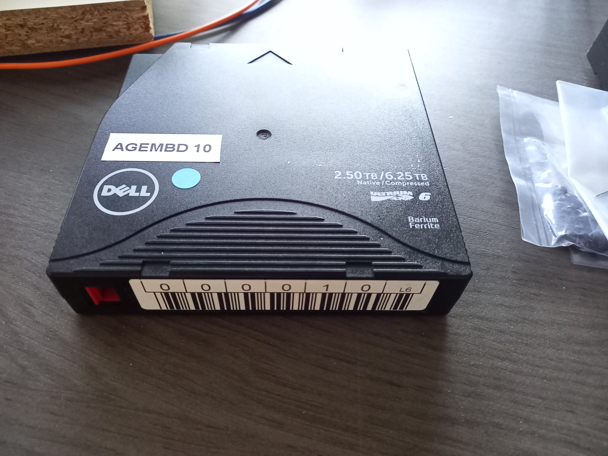
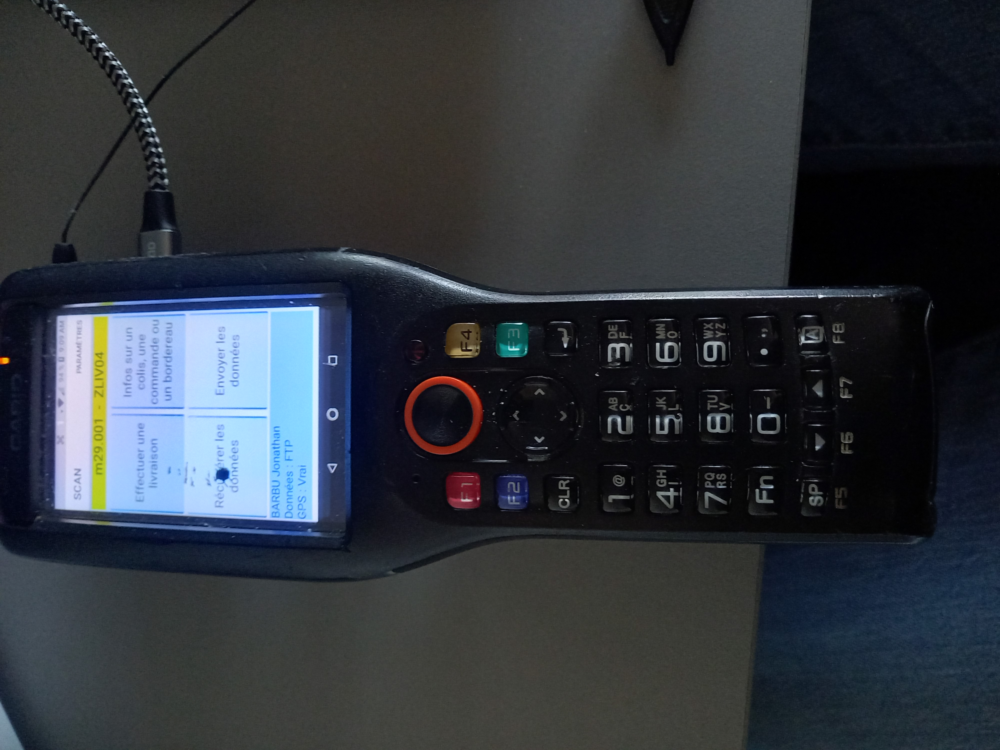
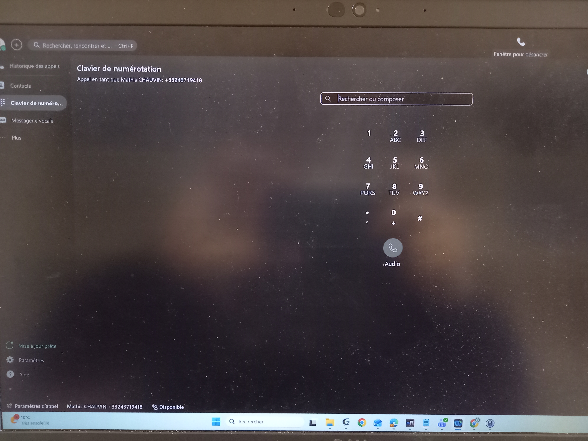
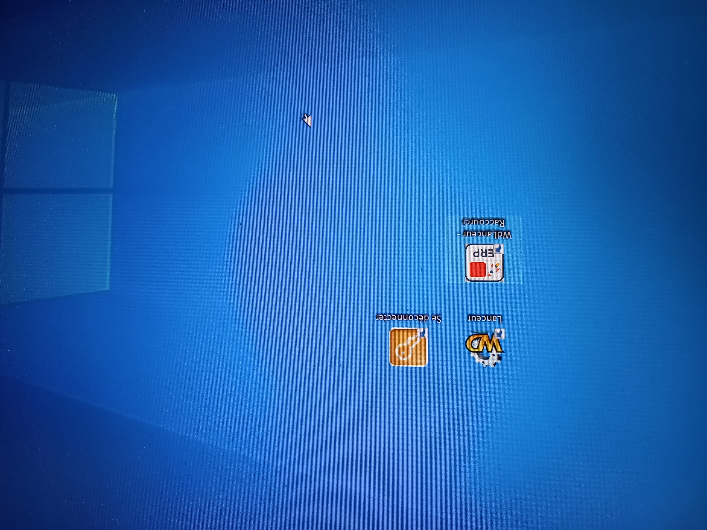
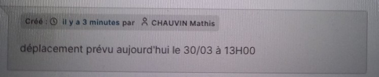

Preuves de Compétences - Espace Jury BTS SIO SISR
👥 Gestion des Comptes, Domaines et Postes
Procédures d'intégration et d'administration des utilisateurs et du matériel :
Déploiement et inventaire Clients Légers (Axel)
Platine Terminal Axel 85

Enregistrement inventaire (axel Remote)

Ajout du materiel GLPI

🌐 Réseau, Périphériques & Infrastructure
Configuration des accès ressources, téléphonie, sauvegarde et équipements réseaux :
Bande de Sauvegarde Dell

Zapette (Casio)

Infrastructure Téléphonie (VoIP & Softphone)
Ancienne telephonie (telephone Alcatel)

nouvelle Aplication pour telephonie (WEBEX)

Configuration Switch (Alcatel OS8 & OS6)
⚙️ Déploiement Logiciels Métier (AGEM)
Déploiement, paramétrage réseau et gestion des licences logicielles :
Aperçu des demandes de licences :


🛠 Support Utilisateur (GLPI) & Environnement (TSE)
Configuration d'environnement Bureau Distant (RDS/TSE) : Déploiement de raccourcis, paramétrage du démarrage de session et accès aux applicatifs (ERP).
Raccourci de connexion RDP (F-TSE)

Environnement utilisateur en session (ERP)

Paramètres de l'environnement TSE

Gestion des tickets (GLPI) : Suivi des interventions, préparation et réinitialisation de postes informatiques.
Vue générale des tickets

Planification d'intervention

🎓 Compétences acquises en cours
Mise en place d'une infrastructure complète en environnement d'apprentissage : services réseaux, sécurité, supervision, haute disponiblité et gestion de parc.
Infrastructure Système et Réseau
Active Directory (AD DS)

Réplication de fichiers (DFSR)

Pare-feu (OPNsense)

Gestion de Parc & Sécurité
Installation de GLPI

Sécurisation Web (HTTPS)

Supervision & Sauvegarde
Supervision réseau (LibreNMS)

Serveur de Sauvegarde (Urbakcup)